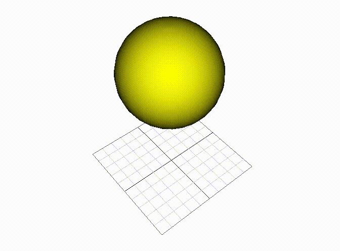

Ziyan Xiong
I have completed most of the goals set before the second update. The first finished task is cloth simulaiton. Currently, my simulator can simulate the movement of a piece of cloth pretty well and this cloth can interact with virtual environment correctly. Some of the simulation results are shown in Figure 1. The cloth ball in will be the skin of the soft object I try to represent. Later in the fluid simulation part, I will fill this cloth ball with fluid and add collision detection and reatcion to both fluid and cloth. The method I am using to complete cloth simulation is merely a more complicated mass and spring system. There are approximately 1000 particles in for flat cloth and ball cloth. These particles are connected systematically to simulate the behavior of the real cloth. However, the explict method used in previous particle system will not work for such large amount of particles and springs. Then I use the implict method to update the position and velocity for each particle at current time step.

Fig.1 The simulation of a piece of cloth falling into the ground(left). The simulation of a cloth ball falling into the ground(right).
The second task accomplished is the fluid simulation. The simulated behavior of the fluids is shown in Figure 2. The method I use for fluid simulation is particle based Smoothed Particle Hydrodynamics (SPH) introduced in Clavet et al. (2005). I use the method introduced in this paper to simulate the viscosity and pressure of my fluid. Currently, I only rendered the particles which represent the properties of the fluid in small area to visualize the fluid. In the simulation of my soft objects, there is no need to render fluid or these particles since they will be contained in the cloth ball I simulated earlier.
Fig.2 The simulation of liquid.
With the ability to simulate the cloth and the liquid. The next step is to combine them together. I added the collision detection code so that the liquid particle will not pass through the clothes and the cloth can react to the impact from the liquid correctly. The simulation result is shown in Figure 3.
Fig.3 The simulation of liquid interacting with the cloth.
The work I have done so far can almost sastisfy the requirement for the simulation of an enclosed soft cloth filled with liquid. However, there are still many details needed to be addressed. Such as, it is a tedious job to represent cloth in a new form, which requires huge amount of manual work. The ideal result is to build the spring and mass system for cloth simulation automaticlly based on given meshes. Another problem is that there is no guide for how to tuning the parameters in liquid simulation, but the combinations of these paraments will greatly affect the simuation result. Some small chages can cause the simulation to explode. I would like to build a more stable simulator for the liquid simulation task. The third problem is even if the collision detection is relatively simple because the cloth and fulid are particle-based, the behavior of the liquid particles after collision is hard to determinded. Ideally, the liquid should flow down along the surface of the simulated cloth so there will need extra code to calculate the normal vector at collision points.
The rest of my task is to find proper method to handle collision of the softe objects with other objects and try to make the simulation stable under various conditioins. In the rest time, I am planing to compare this method with finite-element method on simulating soft objects. If I have extra time after that I will start to build a simulation system for simulating soft objects follwing the movement of skeleton. The exptected results is that the users provide a skeleton animation and designate which part should add the soft tissues consisting of my simulated softe objects. Then these soft tissues can move along the skeleton animation automaticlly.